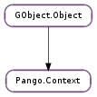

| static | new() |
| changed() | |
| get_base_dir() | |
| get_base_gravity() | |
| get_font_description() | |
| get_font_map() | |
| get_gravity() | |
| get_gravity_hint() | |
| get_language() | |
| get_matrix() | |
| get_metrics(desc[, language]) | |
| get_serial() | |
| list_families() | |
| load_font(desc) | |
| load_fontset(desc, language) | |
| set_base_dir(direction) | |
| set_base_gravity(gravity) | |
| set_font_description(desc) | |
| set_font_map(font_map) | |
| set_gravity_hint(hint) | |
| set_language(language) | |
| set_matrix(matrix) |
None
None
Bases: GObject.Object
| Returns: | the newly allocated Pango.Context, which should be freed with GObject.Object.unref (). |
|---|---|
| Return type: | Pango.Context |
Creates a new Pango.Context initialized to default values.
This function is not particularly useful as it should always be followed by a Pango.Context.set_font_map () call, and the function Pango.FontMap.create_context () does these two steps together and hence users are recommended to use that.
If you are using Pango as part of a higher-level system, that system may have it’s own way of create a Pango.Context. For instance, the GTK+ toolkit has, among others, gdk_pango_context_get_for_screen(), and gtk_widget_get_pango_context(). Use those instead.
Forces a change in the context, which will cause any Pango.Layout using this context to re-layout.
This function is only useful when implementing a new backend for Pango, something applications won’t do. Backends should call this function if they have attached extra data to the context and such data is changed.
| Returns: | the base direction for the context. |
|---|---|
| Return type: | Pango.Direction |
Retrieves the base direction for the context. See Pango.Context.set_base_dir ().
| Returns: | the base gravity for the context. |
|---|---|
| Return type: | Pango.Gravity |
Retrieves the base gravity for the context. See Pango.Context.set_base_gravity ().
| Returns: | a pointer to the context’s default font description. This value must not be modified or freed. |
|---|---|
| Return type: | Pango.FontDescription |
Retrieve the default font description for the context.
| Returns: | the font map for the Pango.Context. This value is owned by Pango and should not be unreferenced. |
|---|---|
| Return type: | Pango.FontMap |
Gets the #PangoFontmap used to look up fonts for this context.
| Returns: | the resolved gravity for the context. |
|---|---|
| Return type: | Pango.Gravity |
Retrieves the gravity for the context. This is similar to Pango.Context.get_base_gravity (), except for when the base gravity is Pango.Gravity.AUTO for which Pango.Gravity.get_for_matrix () is used to return the gravity from the current context matrix.
| Returns: | the gravity hint for the context. |
|---|---|
| Return type: | Pango.GravityHint |
Retrieves the gravity hint for the context. See Pango.Context.set_gravity_hint () for details.
| Returns: | the global language tag. |
|---|---|
| Return type: | Pango.Language |
Retrieves the global language tag for the context.
| Returns: | the matrix, or None if no matrix has been set (which is the same as the identity matrix). The returned matrix is owned by Pango and must not be modified or freed. |
|---|---|
| Return type: | Pango.Matrix |
Gets the transformation matrix that will be applied when rendering with this context. See Pango.Context.set_matrix ().
| Parameters: |
|
|---|---|
| Returns: | a Pango.FontMetrics object. The caller must call Pango.FontMetrics.unref () when finished using the object. |
| Return type: |
Get overall metric information for a particular font description. Since the metrics may be substantially different for different scripts, a language tag can be provided to indicate that the metrics should be retrieved that correspond to the script(s) used by that language.
The Pango.FontDescription is interpreted in the same way as by Pango.itemize (), and the family name may be a comma separated list of figures. If characters from multiple of these families would be used to render the string, then the returned fonts would be a composite of the metrics for the fonts loaded for the individual families.
| Returns: | The current serial number of context. |
|---|---|
| Return type: | int |
Returns the current serial number of context. The serial number is initialized to an small number larger than zero when a new context is created and is increased whenever the context is changed using any of the setter functions, or the Pango.FontMap it uses to find fonts has changed. The serial may wrap, but will never have the value 0. Since it can wrap, never compare it with “less than”, always use “not equals”.
This can be used to automatically detect changes to a Pango.Context, and is only useful when implementing objects that need update when their Pango.Context changes, like Pango.Layout.
| Return type: | families: [Pango.FontFamily] |
|---|
List all families for a context.
| Parameters: | desc (Pango.FontDescription) – a Pango.FontDescription describing the font to load |
|---|---|
| Returns: | the newly allocated Pango.Font that was loaded, or None if no font matched. |
| Return type: | Pango.Font |
Loads the font in one of the fontmaps in the context that is the closest match for desc.
| Parameters: |
|
|---|---|
| Returns: | the newly allocated Pango.Fontset loaded, or None if no font matched. |
| Return type: |
Load a set of fonts in the context that can be used to render a font matching desc.
| Parameters: | direction (Pango.Direction) – the new base direction |
|---|
Sets the base direction for the context.
The base direction is used in applying the Unicode bidirectional algorithm; if the direction is Pango.Direction.LTR or Pango.Direction.RTL, then the value will be used as the paragraph direction in the Unicode bidirectional algorithm. A value of Pango.Direction.WEAK_LTR or Pango.Direction.WEAK_RTL is used only for paragraphs that do not contain any strong characters themselves.
| Parameters: | gravity (Pango.Gravity) – the new base gravity |
|---|
Sets the base gravity for the context.
The base gravity is used in laying vertical text out.
| Parameters: | desc (Pango.FontDescription) – the new pango font description |
|---|
Set the default font description for the context
| Parameters: | font_map (Pango.FontMap) – the Pango.FontMap to set. |
|---|
Sets the font map to be searched when fonts are looked-up in this context. This is only for internal use by Pango backends, a Pango.Context obtained via one of the recommended methods should already have a suitable font map.
| Parameters: | hint (Pango.GravityHint) – the new gravity hint |
|---|
Sets the gravity hint for the context.
The gravity hint is used in laying vertical text out, and is only relevant if gravity of the context as returned by Pango.Context.get_gravity () is set Pango.Gravity.EAST or Pango.Gravity.WEST.
| Parameters: | language (Pango.Language) – the new language tag. |
|---|
Sets the global language tag for the context. The default language for the locale of the running process can be found using Pango.Language.get_default ().
| Parameters: | matrix (Pango.Matrix or None) – a Pango.Matrix, or None to unset any existing matrix. (No matrix set is the same as setting the identity matrix.) |
|---|
Sets the transformation matrix that will be applied when rendering with this context. Note that reported metrics are in the user space coordinates before the application of the matrix, not device-space coordinates after the application of the matrix. So, they don’t scale with the matrix, though they may change slightly for different matrices, depending on how the text is fit to the pixel grid.